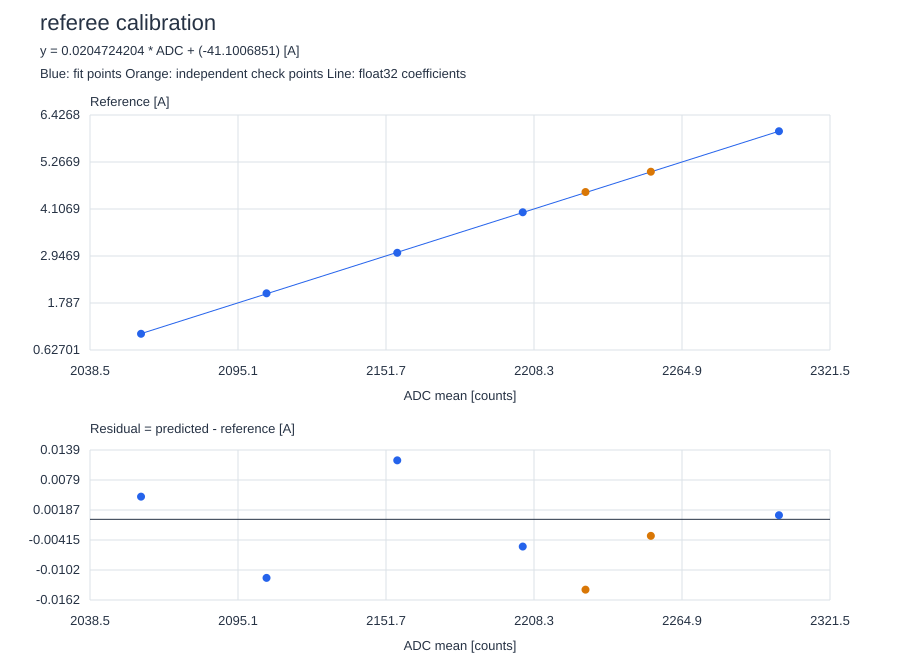
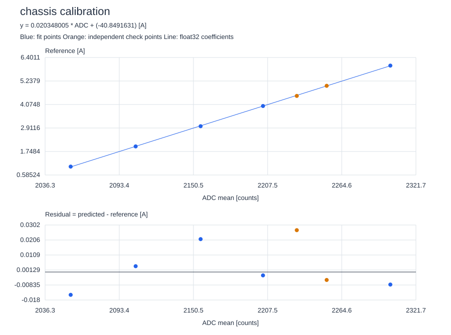
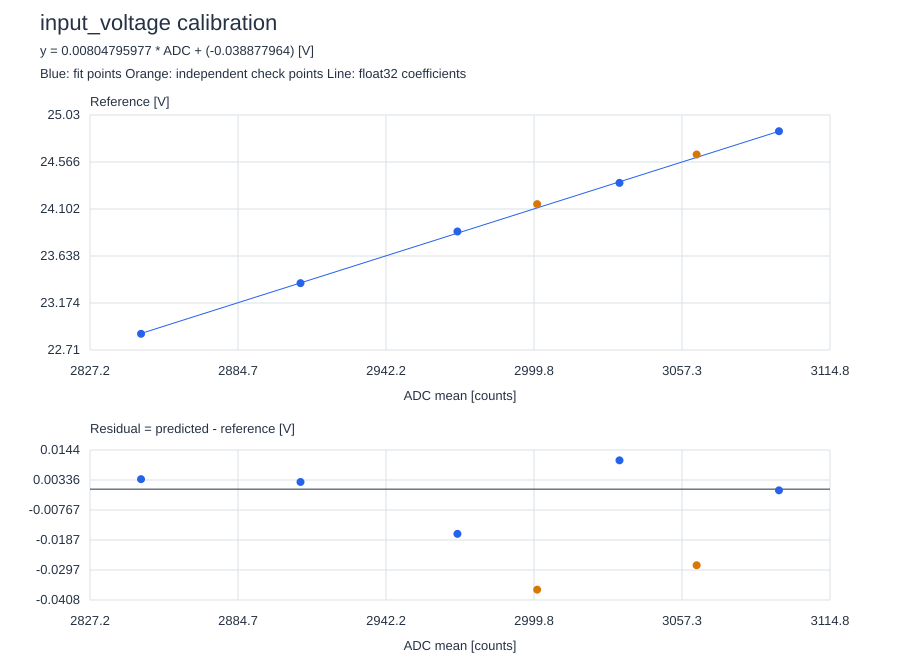
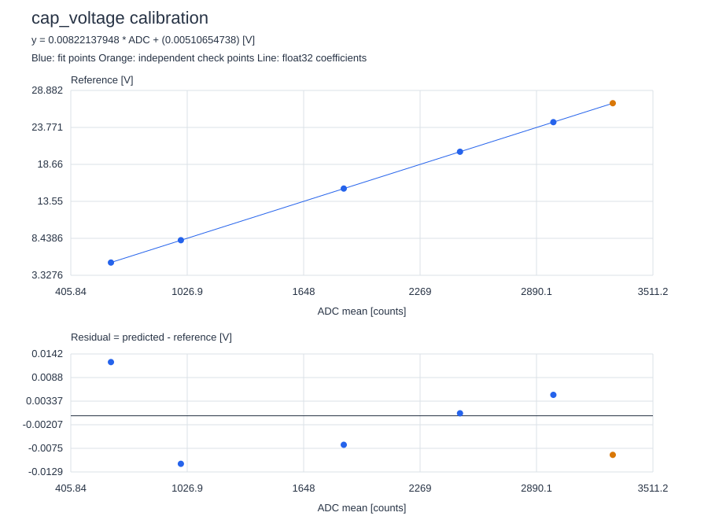

Source: /Users/lvy/workspace_ccstheia/Supercap_V2/tools/calibration/data/calibration_data02_measured.csv
Model: physical = k * ADC + b. Residual = predicted - reference. Each point has equal weight after averaging.
拟合结果不是校准批准。请核对测量范围、方向、独立验证误差和仪表精度；不要仅凭 R² 解锁功率级。
Missing channels: bridge_a, bridge_b, cap_current
#define SUPERCAP_CALIBRATION_REFEREE { 2.047242038e-02F, -4.110068512e+01F }
Fit ADC range: [2058.0, 2302.0]; zero-value ADC: 2007.61
| Dataset | Points | RMSE | Max |error| | R² |
|---|---|---|---|---|
| fit | 5 | 0.0081279 A | 0.0118532 A | 0.999977675 |
| check | 2 | 0.0102656 A | 0.0141325 A | 0.998320614 |
存在单行数据：若不是已平均ADC，请采集多个稳态样本；单行均值无法估计噪声。
缺少实测零电流点。
未覆盖正负电流，反向校准尚未验证。

#define SUPERCAP_CALIBRATION_CHASSIS { 2.034800500e-02F, -4.084916306e+01F }
Fit ADC range: [2056.0, 2302.0]; zero-value ADC: 2007.53
| Dataset | Points | RMSE | Max |error| | R² |
|---|---|---|---|---|
| fit | 5 | 0.0122094 A | 0.0211372 A | 0.999949624 |
| check | 2 | 0.019354 A | 0.0268898 A | 0.994006785 |
存在单行数据：若不是已平均ADC，请采集多个稳态样本；单行均值无法估计噪声。
缺少实测零电流点。
未覆盖正负电流，反向校准尚未验证。

#define SUPERCAP_CALIBRATION_INPUT_VOLTAGE { 8.047959767e-03F, -3.887796402e-02F }
Fit ADC range: [2847.0, 3095.0]; zero-value ADC: 4.83079
| Dataset | Points | RMSE | Max |error| | R² |
|---|---|---|---|---|
| fit | 5 | 0.00897516 V | 0.0164365 V | 0.999838259 |
| check | 2 | 0.0327721 V | 0.0369495 V | 0.982107334 |
存在单行数据：若不是已平均ADC，请采集多个稳态样本；单行均值无法估计噪声。

#define SUPERCAP_CALIBRATION_CAP_VOLTAGE { 8.221379481e-03F, 5.106547382e-03F }
Fit ADC range: [620.0, 2980.0]; zero-value ADC: -0.62113
| Dataset | Points | RMSE | Max |error| | R² |
|---|---|---|---|---|
| fit | 5 | 0.00828747 V | 0.0123617 V | 0.999998699 |
| check | 1 | 0.00900566 V | 0.00900566 V | n/a |
存在单行数据：若不是已平均ADC，请采集多个稳态样本；单行均值无法估计噪声。
部分验证点在拟合ADC范围外，属于外推。
